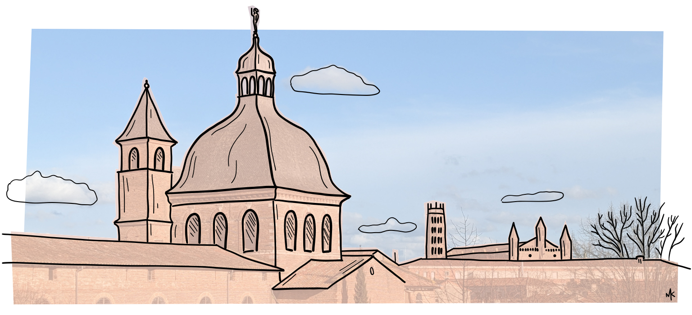

I’m a Research Fellow at the Institute for Advanced Study in Toulouse, University of Toulouse 1 Capitole, in France (IAST).
I am currently working on the effects of network embeddedness, identity-bias and politicization of decision making on the emergence of polarization. Specifically, I study how pro-environmental attitudes form and how we can overcome the effects of false polarization, identity-based disagreement and belief consolidation that currently stand in the way of collective action for climate change mitigation.
My research interests lie, more generally, in understanding social influence, opinion dynamics, and political polarization. I use methods from computational social science and sociology like formal modeling, online experiments and the analysis of digital trace data. In my PhD research I focused on the impact of communicating via online social media platforms on processes of opinion formation and the diffusion of culture.
I got my PhD in Sociology from the University of Groningen where I was a member of the Norms and Networks Cluster and the ICS. Before joining the IAST, I was a Postdoctoral researcher at the Chair of Sociology and Computational Social Science in the Karslruhe Institute of Technology.
Here, you can find more about my current projects, general research interests, and publications.
Let’s get in touch!
✉️ marijn.keijzer@iast.fr
| Website created with R Markdown | Last updated on |